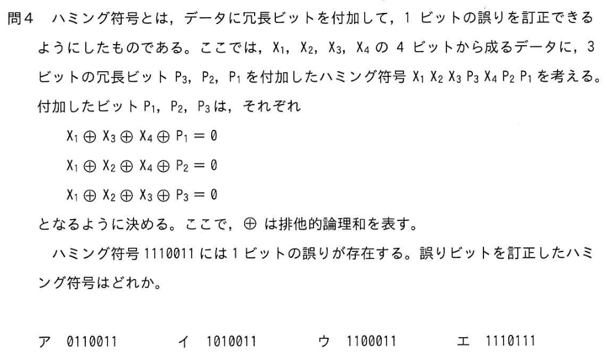

このモックで試すこと
新しいタブを作らず、質問文のコピーに成功してから選んだAIへ同じタブで移動します。コピーに失敗した場合は移動せず、原因と手動コピー欄を表示します。
既存のひと問本体や学習記録は変更しません。スマホではHTTPSのこのページをChromeやSafariで開いて試してください。
サンプル問題
令和4年度 春期 応用情報 午前 問4（ハミング符号）

サンプル回答：イ 正解：ア。実際の質問文には問題文・選択肢・解説・自由質問が含まれます。
相談するAI
成功するとこのタブがAIのサイトに変わります。AI側で入力欄を長押しして「貼り付け」を試してください。戻る操作でこのモックに戻れます。
まだ実行していません。
コピーされる質問文を確認する
スマホ環境の診断情報
コピーできなかった場合、エラー名と上記の診断情報が原因の切り分けに役立ちます。診断欄には学習記録や個人情報を含めません。